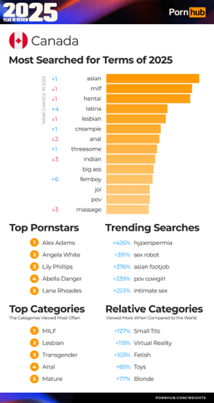

Hi everyone! Welcome to my blog.
I am a student at the University of Toronto Mississauga.
Currently, I am taking an interesting course that discusses social media and content creation. Before I registered for WRI227, I thought that this course would teach me how to write a compelling social media post. However, I found this course to be beyond fascinating after I fell in love with the porn class in Week 5!
Connecting porn with the theoretical theory of political economy? What a surprise!
Here is what I would like to share with you about the 5 most important things that I learned from the WRI227's porn class:
Pornography is Ambiguous to Define and Describe
In the book, The_erotic_engine, Patchen Barss (2010) discusses that there is a lack of consistent language to describe pornography as our society changes all the time. It may seem difficult to understand, but do not worry! Barss listed a lot of examples to explain what he means by ambiguity.
Now, when we are speaking of pornography, it may remind us of adult magazines, explicit photo albums, or sex movies on Pornhub. However, Barss provides explanations and clarifies that pornography used to only represent "writing about prostitutes" in the 19th century (2010, p.10). Haha, maybe we are living in a lucky society because the diversity of media technologies empowers us with more choices for pornography.
Another interesting thing about the ambiguity is that the connotation of porn-related terms is also varied, like "obscenity" refers to a sense of condemnation, "porno" is usually used by fans, "adult" involves legality… (Barss, 2010. p,10).
Now, we are clear that the first learning outcome of pornography is ambiguous to define and describe. So, how are these inconsistent and ambiguous languages related to social changes?
Pornography Links with the Development of Technology
Now, let's continue Barss's notes on pornography into a deeper level, exploring its relationship with technology!
Without question, the evolution of technology is a significant part of social change. The following photos fully reveal Barss's (2010) opinion that pornography drives the development of technology. Starting from ancient frescoes and statues to the mass production of pornographic novels and films, and now staying in the modern era of digital platforms, pornography has witnessed the historical development of technologies.
As many pornographers were the early adopters of new media (Brass, 2010), the "creation, transmission, and diffusion" of pornography highly relies on media technologies (Week 5 slides from Professor Cate Cleo Alexander's lecture).
Image Credit: Photographic Archive, National Archaeological Museum of Naples
Image Credit: The British Museum Images
Image Credit: Josh Jones, 2019
Image Credit: The Arquives
Image Credit: Screenshot of Amazon
Image Credit: Prachatai, 2020
Internet Pornography Platforms are Now Datafying Users' Behaviors
Speaking of technology, we are currently living in a data-driven society, which is full of surveillance and datafication. All internet-related activities, such as clicks, views, likes, and preferences, are documented in the form of quantifiable data, becoming an essential part of the Internet commodification model (Keilty, 2021).
So, porn lovers, be careful while watching! You now should aware that owners of platforms such as Pornhub and OnlyFans are monitoring you and making profits from you.
Pornhub Insights is a typical example of datafication, datafying users' consumption habits of pornographic content. If you are interested in this, just go search!
The following screenshot is from Pornhub Insights, documenting Canadians' porn preferences on Pornhub in 2025. As can be seen, there were rave reviews of Asian content as it ranks number 1, and "MILF" and hentai rank second and third place, respectively. These data indicate that Asian-themed content, MILF-themed content, and animated content are highly popular in Canada.
Instead of generating a feeling of anger due to capitalism's datafication business model, Keilty's (2021) thoughts about Pornhub Insights are interesting, as he senses this type of surveillance and exposure of user behavior as a peculiar fascination and the pleasure of exposure.

Image Credit: Pornhub Insights
The Platform Algorithm Determines the Success of Content Creators
I bet you have heard the word ALGORITHM if you are interested in my blog. But there are things you might not know: the algorithm directly influences the success of porn content creators.
Popular porn platforms such as Pornhub and OnlyFans have built sophisticated algorithmic systems that determine the visibility of porn creators' work and further impact their profits (Poell et al., 2022). Clearly, pornographers are in a passive status in the capitalists' world. If porn content creators' network traffic is great, the exposure of their work rises; otherwise, no views, no penny.
Another interesting fact is that an algorithm is a discriminator. Taking YouTube as an example, small content creators and marginalized groups tend to receive fewer opportunities to receive a recommendation label from the platform, which then leads to inequality (Glatt, 2022).
Unfortunately, YouTube is not the only case. Content creators on platforms like Pornhub and OnlyFans are facing similar issues, with less visibility and recommendation possibilities.
Working on the Internet Pornography Platforms is Precarious
Platform economies rely on creative workers, and they wouldn't achieve substantial profits without continuous innovation. Workers such as pornographers working in the precarious employment must suffer from unstable income, irregular working hours, welfare shortage, fluctuating data traffic, and growing competition (Glatt, 2022; Poell et al., 2022).
Porn content creators, like those on Pornhub and OnlyFans, may spend more than 8 hours shooting porn films, hiring actors, and finding locations for shooting. Clearly, the effort put in is not equal to the reward received.
However, how do we change this condition?
Comment below to leave your thoughts.
References
- Barss, P. (2010). Introduction. In The erotic engine: How pornography has powered mass communication, from Gutenberg to Google (pp. 6-10). Brisbane: University of Queensland Press, 2010. Link
- Alexander, C. C. (2026, January 30). Porn and political economy [PowerPoint slides]. University of Toronto Mississauga.
- Keilty, P. (2021). Pornography. In N. B. Thylstrup, D. Agostinho, A. Ring, C. D'lgnazio, & K. Veel (Eds.), Uncertain archives: Critical keywords for big data. Cambridge, Mass: MIT Press. Link
- Poell, T., Nieborg, D, B, & Duffy, B. E (2022). Labor. In Platforms and Cultural Production (pp. 109-132). Cambridge, UK: Polity Press. Link
- Glatt, Z (2022). We're all told not to put our eggs in one basket: Uncertainty, precarity and cross-platform labor in the online video influencer industry. International Journal of Communication, 16, 3853-3871. Link